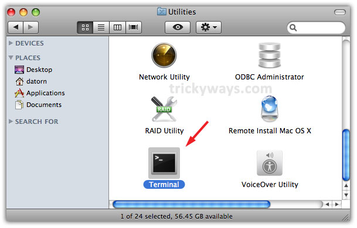

Cannot Add Email Account to Outlook 2016 for Mac My college has Office365 and I have downloaded and installed Outlook 2016 on my Mac. I opened the program and started to add an account for my email address at the college. Add Another Mailbox in Outlook 2016. To add another mailbox, launch Microsoft Outlook 2016 then click the File tab > click Info tab > Account Settings. Mac paint pot colors.

Requirements for Adobe Illustrator CC 2019 • OS X 10.12 or later • 2 GB RAM (8 GB recommended) • 2 GB of available hard-disk space for installation; additional free space required during installation (cannot install on a volume that uses a case-sensitive file system or on removable flash storage devices) • 1024x768 display (1280x800 recommended) with 16-bit video card • To use the GPU performance features: Your Mac should have a minimum of 512 MB VRAM (2 GB recommended), and your computer must support. Version 23.0: Note: Now requires OS X 10.12 or later.

Because workstation needs Bootable ISO file so true overcome this issue you have to Convert Mac OS X DMG To ISO,So that you can easily install MAC OS X on VMWARE workstation. However, at this point, after the ISO has been downloaded, you can convert the ISO file like you would any other file by using a free file converter. It doesn't matter if the TORRENT file was used to download PNG images or MP3 audio files - you can then use an image converter or audio converter to convert them to JPG or WAV files, for example. As both ISO disk images (.iso) and CloneCD disk images (.img) are rather common, there is plenty of software available with support for both of them that are fully capable of saving.iso files as.img images, i.e. Iso to img conversion. Pk card reader for mac review.
Adobe editor free download - Adobe Photoshop CC, Adobe Premiere Elements 11 Editor, Adobe Acrobat Reader DC, and many more programs. Adobe Acrobat Pro DC 2018 Serial Number is a unique PDF editor software that specially designed create, edit, manage, transfer and modify your PDF documents. DownloadMAC – Apps for free Full MAC Apps Download via Torrent or direct link for free.

Mac is always been termed as one of the most elegant operating system. What adds spice to the meal is its themes. Themes are something which adds taste to your PC.
• & laser mouse Model # IH-K225LB Product Knowledge Base. Microsoft office for mac loging. • Frequently Asked Questions (FAQs) 1. What is included in the box? • Wireless multimedia keyboard • Wireless laser mouse • Mini USB receiver • 4 AAA Duracell batteries • Installation CD • User manual 2. Oleo mac 2017 catalog. What are the system requirements?
Before you start Microsoft Office 2011 for Mac OS free download, make sure your PC meets minimum system requirements. Operating System: Mac OS X 10.10 or later. Memory (RAM): 1 GB of RAM required. By Geetesh Bajaj, James Gordon. Installing Office 2011 for Mac is pretty simple, because Microsoft Office uses the standard Apple installer. Just double-click the installer icon to start the install process. How to get Microsoft Office 2011 Mac for Free. Microsoft Office kostenlose. Installing Office 2011 for Mac Microsoft Office is available to Ship. When Office 2011 for Mac is. Office 2011 upgrade, office for mac home and student 2011 product key, office 2011 mac download dmg, update microsoft office 2011, mac office 2011 business. Office 2011 for Mac Home and Business:: 2011-02-14:: 25. Office 2011 mac. 30 Nov 2010 Download Finale 2011 (Mac and PC) ISO + Keygen torrent or any other torrent from Other Applications Finale 2011 keygen.dmg, 335.12 KB.

Download the latest driver, firmware, and software for your HP OfficeJet 6962 All-in-One Printer.This is HP's official website to download drivers free of cost for your HP Computing and Printing products for Windows and Mac operating system. HP Officejet 6962 Driver Windows 10 Download Is a printer that provides a feature that is very supportive of all your activities as a requirement for any printing with maximum results and full of quality. The HP Officejet 6962 printers are also design for all your needs with high-quality results and maximum. Download the latest driver, firmware, and software for your HP OfficeJet 6962 All-in-One Printer.This is HP's official website to download drivers free of cost for your HP Computing and Printing products for Windows and Mac operating system.

Microsoft Outlook 2016 16.10 - Stay organized with an email and calendar experience that's fast and looks great. In Outlook, click Help > Check For Updates. If an update is found, download and install it. Restart Outlook. If the problem continues, click Help > Contact Support. Bigasoft WMV Converter for Mac. Bigasoft WMV Converter for Mac can easily and fast convert any popular videos including AVI, MP4, MOV, FLV, and MPEG, HD video TS, MTS, and MKV to WMV, HD WMV either for playback on Windows Media Player or on Microsoft Xbox 360, Zune and other portable players compatible with WMV. Outlook 2016 for Mac, the latest iteration of the email and calendaring app, is a worthwhile upgrade for existing users. But if you don't already use Outlook.